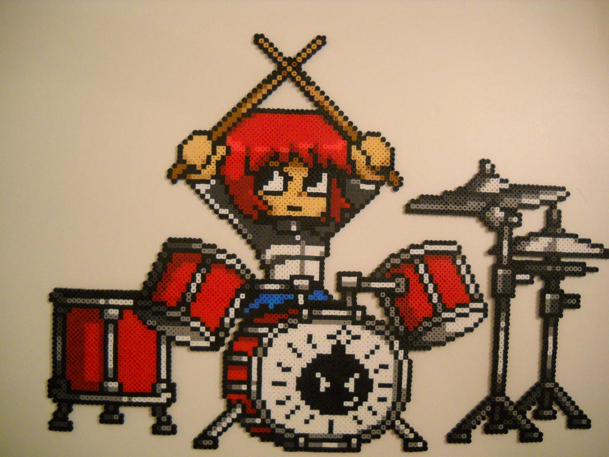
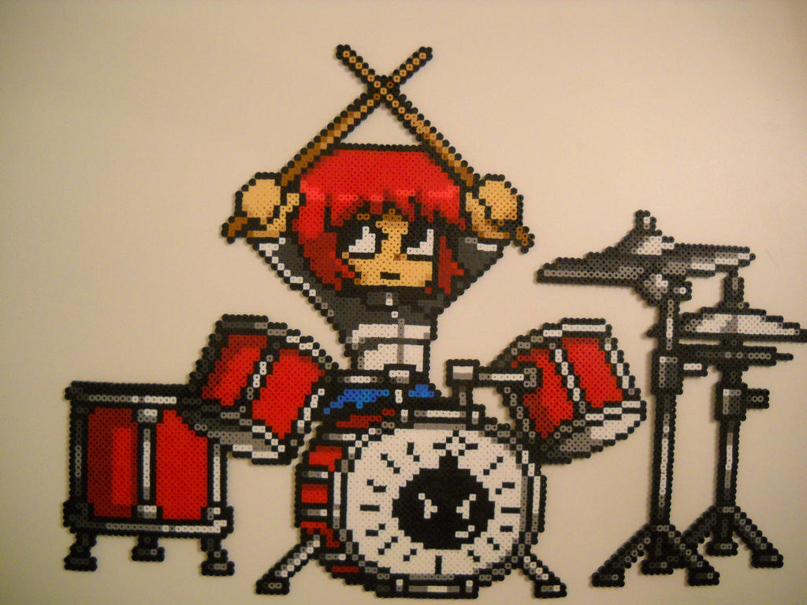
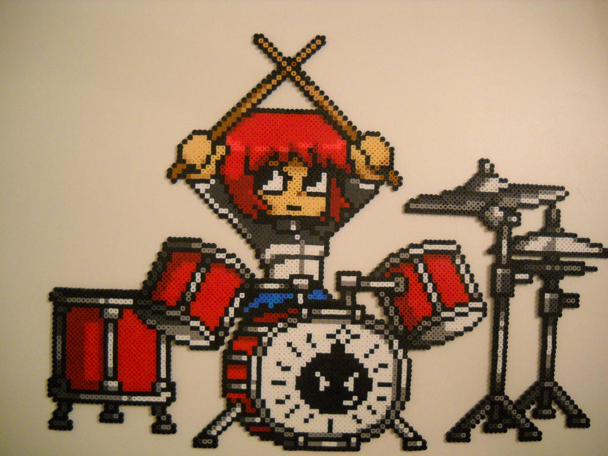

Inicio
Multimedia
Imagenes

Audio
Tu navegador no admite la reproducción de audio.
Tu navegador no admite la reproducción de audio.
Videos
Tu navegador no admite la reproducción de video.
Tu navegador no admite la reproducción de video.
Contenido Incrustado
youtube
spotify
 
